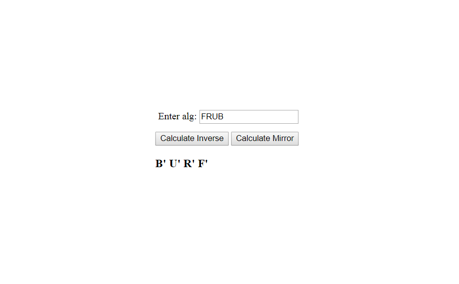
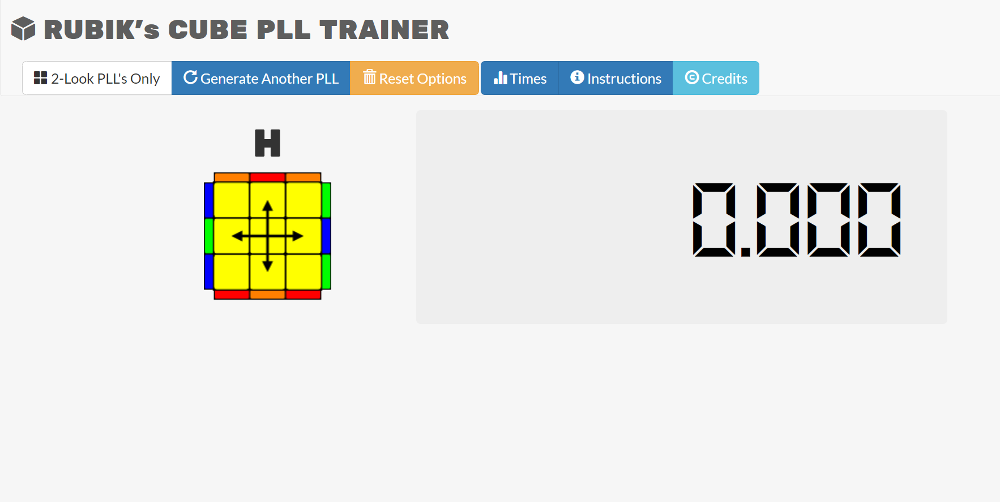
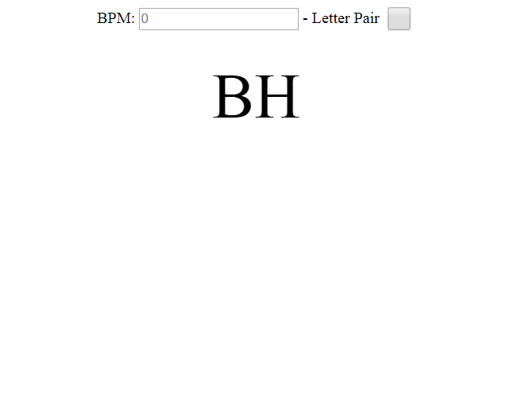
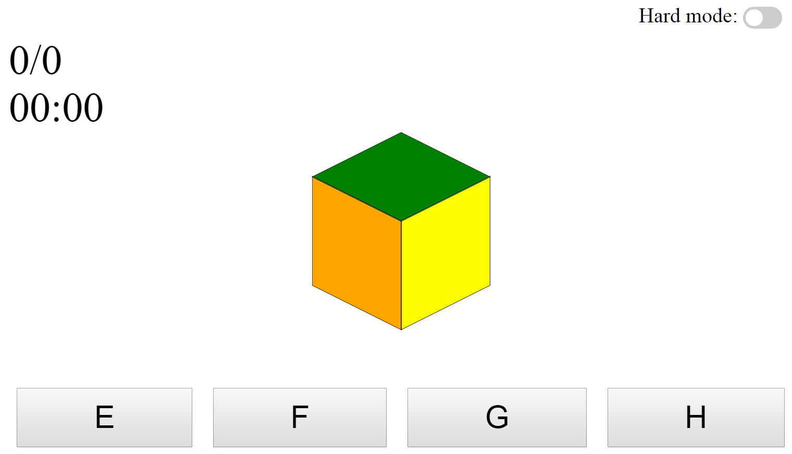
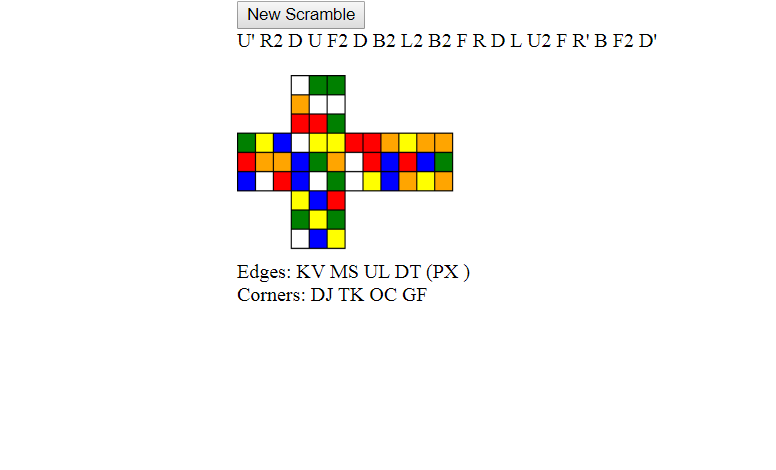

Moreno van Rooijen
Something short and leading about the collection below—its contents, the creator, etc. Make it short and sweet, but not too short so folks don't simply skip over it entirely.


PLL trainer
A tool to train and track your PLL's Made by someone else but adjusted it slightly.
Go to project

Blind Metronome
A tool that generates letters every few seconds. Gives the ability to train BLD algs at a constant interval.
Go to project

colorscheme
Go to project
